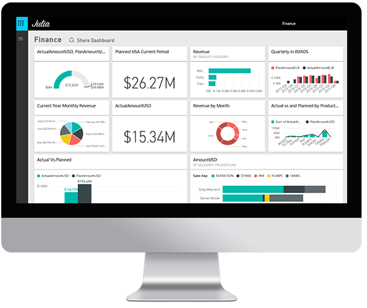
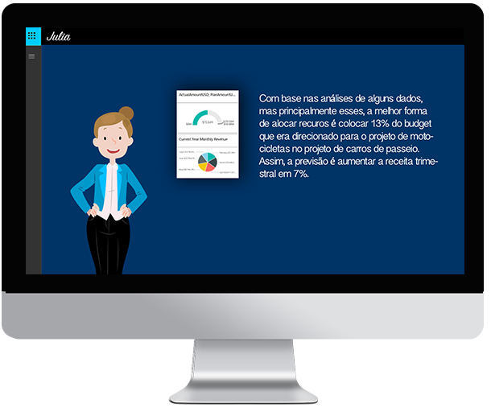

Julia é um sistema de distribuição de recursos que se baseia em análise de dados para tomada de decisões. De forma organizada e com muito cuidado, Julia traz as melhores decisões para o gestor financeiro de sua empresa.

As análises são feitas baseando-se nos dados da empresa captados sobre um determinado projeto, em determinado período de tempo. Assim, Julia gera dashboards interativas e simplificadas.

O grande objetivo do sistema é auxiliar o gestor na tomada de decisão sobre distribuição de recursos dentro da empresa. Julia aprende por um tempo como são feitas as tomadas de decisão na área específica e logo está apta para propor as melhores soluções de distribuição de recursos.
Como tenho Julia na minha empresa?
Basta deixar seus dados e assim que Julia estiver disponível entramos em contato e damos acesso a um período de testes.